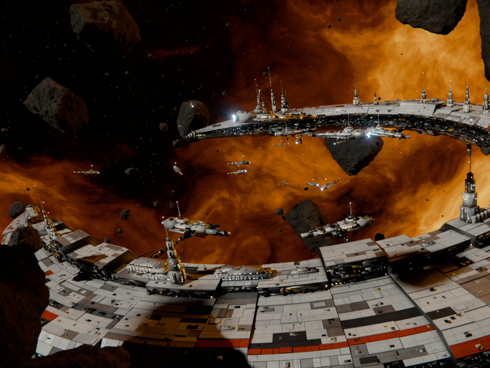
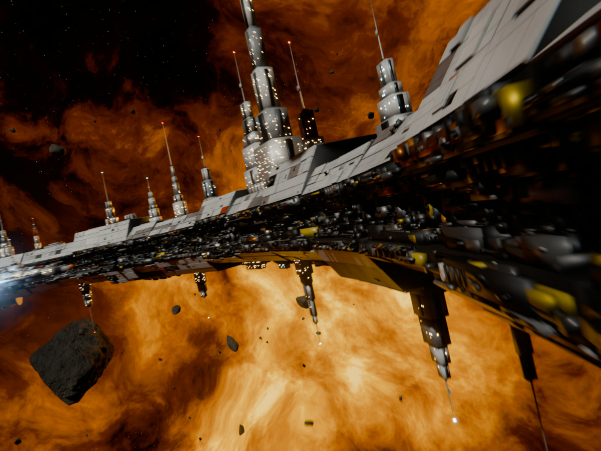
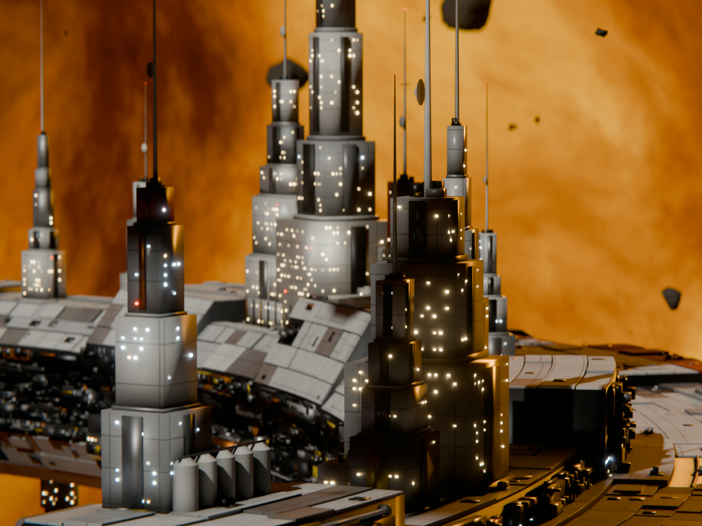
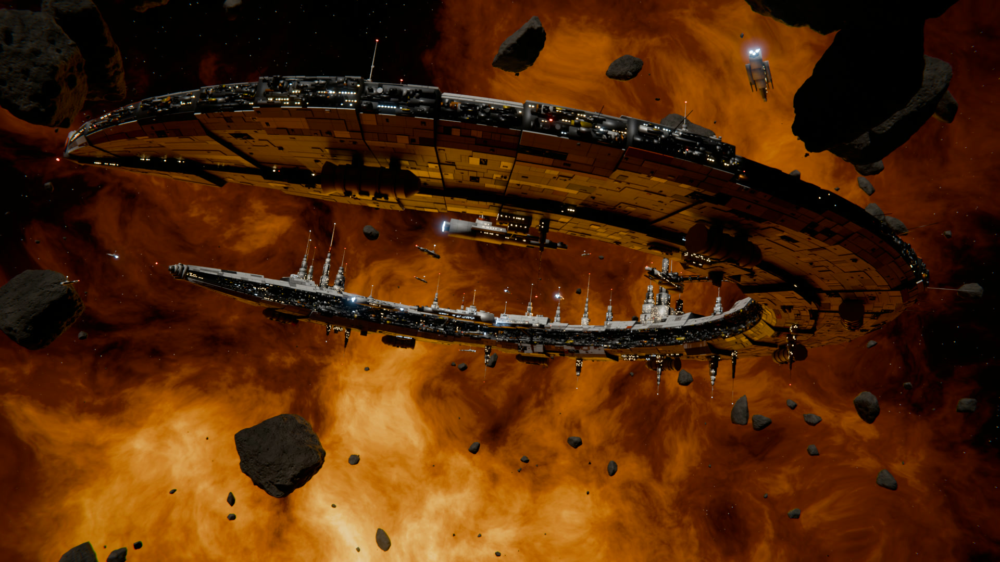

  <!-- ===== cold open extras: black backing, ring ship stills (it has no video, the push is made here), contact sheet that lands behind Aidan ===== -->
  <div id="co-back" class="clip" data-start="0" data-duration="{{mc}}" data-track-index="2"></div>
  <div id="rs1" class="clip rs" data-start="0" data-duration="1.6666" data-track-index="6"></div>
  <div id="rs2" class="clip rs" data-start="1.6666" data-duration="1.3" data-track-index="6"></div>
  <div id="rs3" class="clip rs" data-start="2.9666" data-duration="0.9667" data-track-index="6"></div>

  <div id="sheet" class="clip" data-start="13.7" data-duration="2.8" data-track-index="7">
    <div class="print" id="pr1" style="left:72px"><div class="nm">built by</div><div class="tk">not me</div></div>
    <div class="print" id="pr2" style="left:512px"><div class="nm">built by</div><div class="tk">not me</div></div>
    <div class="print" id="pr3" style="left:952px"><div class="nm">built by</div><div class="tk">not me</div></div>
  </div>

  <!-- ===== cutaway: the three builds full frame on "every single one of these frames... straight from a Blender viewport" (starts and ends on jump cuts) ===== -->
  <div id="mont-back" class="clip" data-start="{{montIn}}" data-duration="3.933" data-track-index="14"></div>
  <div id="montr" class="clip" data-start="{{montIn}}" data-duration="1.333" data-track-index="16"></div>
  <div class="mont" id="montw1"><video id="mont1" src="assets/mont/mont.mp4" data-start="{{montV}}" data-duration="2.6" data-media-start="0" data-track-index="13" muted playsinline></video></div>
  <div id="mont-shade" class="clip" data-start="{{montIn}}" data-duration="3.933" data-track-index="15"></div>
